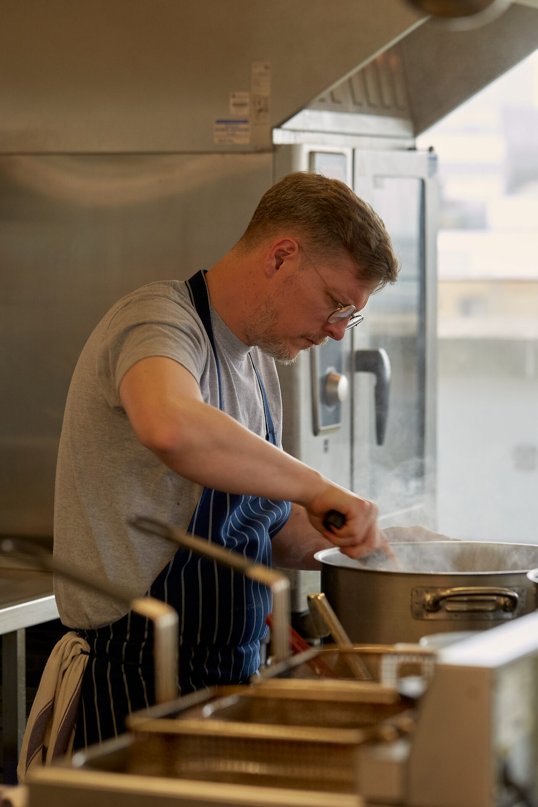
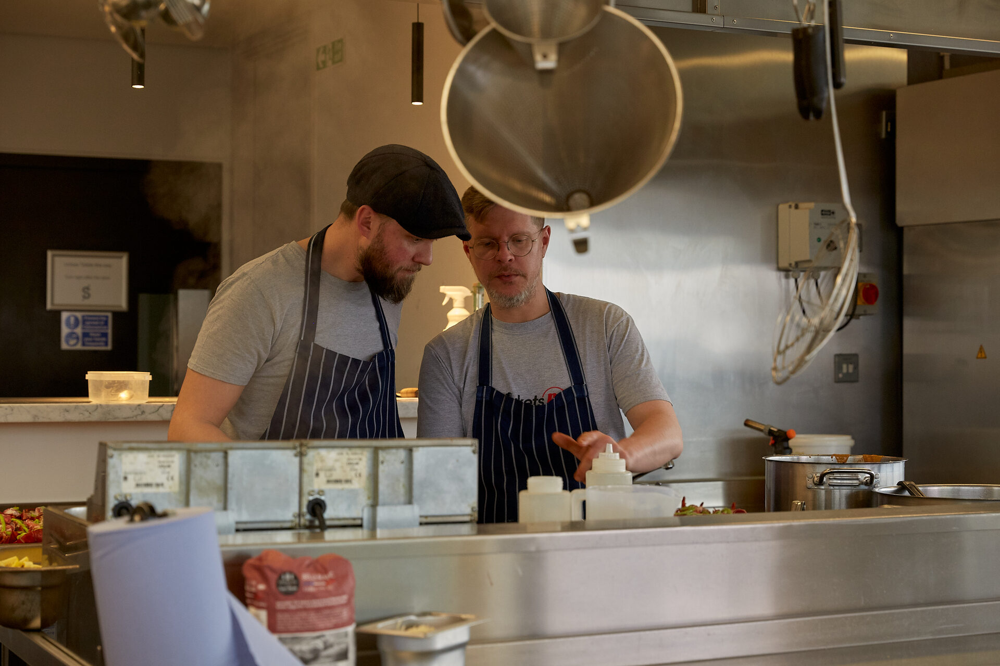
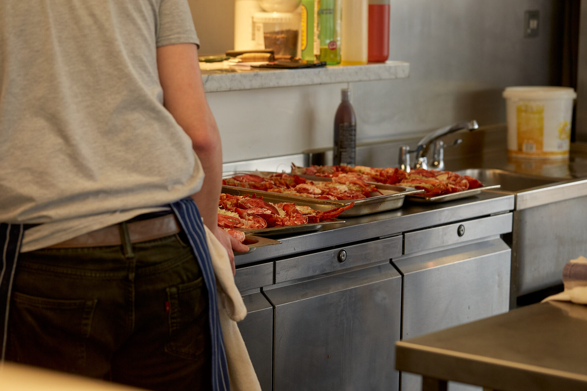
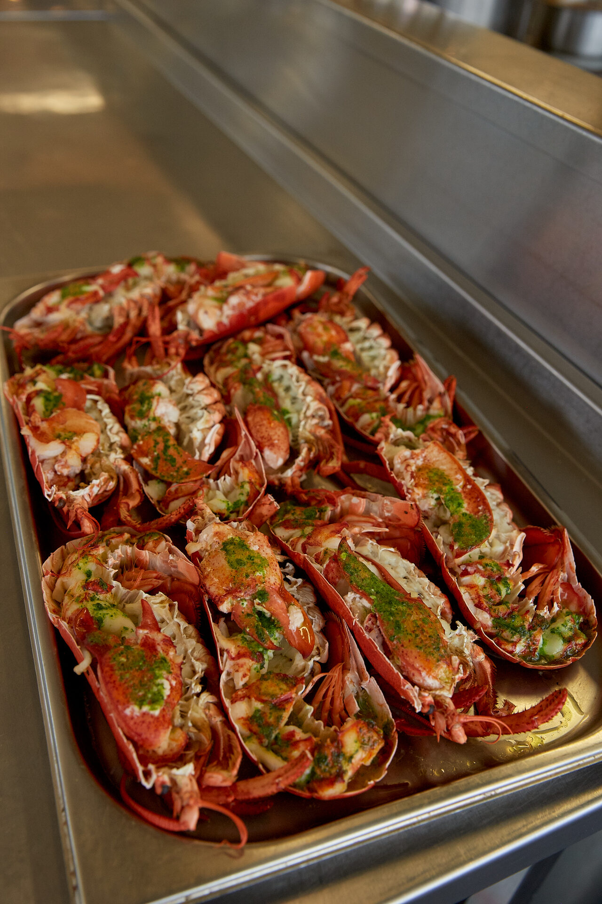

Our office
Where the work happens and teams spend time together.
London HQ
St. Katharine Docks, next to Tower Bridge, on the Thames.
Our headquarters sits in one of London's more distinctive locations. St. Katharine Docks is a converted marina just east of the City, surrounded by restaurants and public spaces nearby. The office itself is open-plan with smaller offices, built for collaboration — engineers sit with traders, product sits with operations.
Food at Smarkets
Daily meals are part of how we work — and how we connect.
We have a full kitchen and an in-house chef. Lunch is served every day for the whole team — it's when engineers talk to operations, product people swap ideas with ops, and new joiners get to know everyone. Food isn't a perk; it's infrastructure for collaboration.




Meet Alex — In-house Chef
What's your approach to feeding the team?
I try to cook food that brings people together. Different cuisines, seasonal ingredients, and always something for everyone. The kitchen is the heart of the office.
What's the most requested dish?
It changes, but the team always goes wild for fresh pasta day.
Malta
Our regulatory and operations hub in the Mediterranean.
Our Malta office is the regulatory and European operations hub for the business. The team here manages compliance across our Malta Gaming Authority licence, handles customer operations for European markets, and supports the AML and responsible trading programmes that underpin our multi-jurisdiction licensing.
It is a close-knit team, and the work is central to market entry, regulatory audits, and licence renewals. The team works closely with London across time zones. The office sits next to the harbour in St. Julians.
Find us
London
1 Commodity Quay
St. Katharine Docks
London E1W 1AZ
United Kingdom
Malta
The Hedge
Ir-Rampa ta' San Giljan Street
St. Julians STJ 1062
Malta